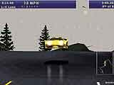
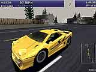
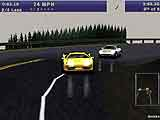
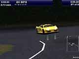
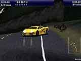

Need for speed III — это игра для тех, кто не представляет себе жизнь без крутейших машин, огромной скорости, запаха бензина и визга тормозов. Фанатов предыдущих двух версий спешу обрадовать тем, что данный soft поистине лучший среди своего семейства. Но начнем по порядку.
Заставка в игре, как всегда, на высоте и очень динамична. Буквально с первых кадров вступления, можно заметить до боли знакомые огоньки (синий и красный). Да, это одна из тех вещей, которые порой не дают свободно "обкатывать" своих соперников, т.е. копы или просто ГАИ (ГИББД). Машины у них не блещут скоростью, но за рулем сидят прямо-таки "монстры", которых не испугаешь ни крутой ездой, ни громким матом — вообщем люди своего дела. В отличие от первой части NFS, где органы местной власти встречались в единственных экземплярах, то в NFS III они стали организованней и, как правило, "укатить" не получается. Остановка нарушителя производится различными методами, начиная от мирного прижатия к краю и заканчивая обычным дорожным ежом (последнее бывает крайне редко и в случае большого упорства со стороны лихача). Все же можно не попадаться на глаза проезжающему ГАИ'шнику, держа скорость, указанную на знаке. Но, согласитесь, так будет скучновато, да и само название игры противоречит такой тактике (Hot Pursuit — "горячая" погоня).
Что касается самих гоночных машин, то их тут достаточное количество, начиная от скромного, по этой игре, Mersedes'а и заканчивая такими машинами, как Lamborgini у которых табун под капотом. Разработчики предоставили нашему вниманию обзор салона каждой машины, ее характеристик, стоимости и парочку слайдов из истории данного экземпляра.
На описании трасс, думаю, нужно остановиться по подробнее. Сложность их, конечно, достаточна и поэтому без особых навыков вождения прийти в числе первых, даже на самом легком уровне практически невозможно. А внешний вид практически каждой напоминает американские горки. Интересно сделана 3D-модель выбранного пути. До гонки ее можно повертеть и рассмотреть все тонкости, а так же послушать описание, правда, на английском, но все равно приятно. Езда происходит практически во всех условиях (т.е. день или ночь, дождь или снег). Такого не было в предыдущих версиях игры. Самое интересное — это гонки ночью — ничего не видно, кроме горизонта, и иногда мелькает обочина. Можно, конечно, заказать услуги штурмана, но он вскоре надоедает. Зима представляет также особый интерес. В это время машину сильней заносит, но зато можно погонять по сугробам.
Графика на голову выше предыдущих версий. Появилась практически полная реалистичность езды. Учтены практически все тонкости: отблеск фар от дороги, эхо звуков в тоннели, пыль на определенном участке дороги и еще множество подобных (посмотрите и решите лучше сами, что для вас новое и необычное). Что касается пейзажей в этой игре, то можно отдельно ездить и рассматривать каждый из представленных. В общем, все как надо.
Звук также не отстал. Пролетая какое-нибудь место можно услышать лай собак, вой волков, шум поезда, прибоя и т. д. А на протяжении всей игры вас сопровождает cool'ьная музыка, которую можно выбрать из представленного списка, в зависимости от настроения.
Нельзя не отметить управление гоночных агрегатов. Здесь продуманы все тонкости езды. Можно, к примеру, проходить повороты, используя занос машины (так делают лихачи в некоторых фильмах и, таким образом, можно попробовать свои силы в этом искусстве). Можно так же использовать ручной тормоз для маневров (кстати, очень хорошее средство от местных патрулей при грамотном использовании). Всех преимуществ я не в силах перечислить, так как многих еще не знаю и предлагаю вам самим посидеть за баранкой этих "железных коней".
А теперь о ложке дегтя в цистерне меда. Основным, на мой взгляд, недостатком является то, что эта игра под 3Dfx. Может, конечно, за морями 3Dfx уже обычная вещь, но многим геймерам нашей страны это не под силу и игры такого рода со "скрипом" идут на наших компах. Получается, что насладиться игрой в полной красе могут только обладатели мощной техники. Можно, все же, убирая различные спец. эффекты или разрешение добиться движения без рывков, но это уже, согласитесь, извращение. К примеру, ваш покорный слуга играет на: P200 MMX/32Mb RAM/4Mb Video, убрав все спец. эффекты, широкий экран, горизонт (т.е. небо) и на разрешении 640x480, хотя вторая часть NFS просто летела на моем электронном друге. Так что делайте выводы и решайте приобретать NFS III или остановиться на какой-нибудь другой теме. А обладателям более резвых машин (в смысле электронных) скажу только что это самый лучший симулятор гонок в этом виде и он доставит много приятных минут тем, кто не безразличен к скорости.
{kind=link}
{kind=link}
{kind=link}
{kind=link}
{kind=link}